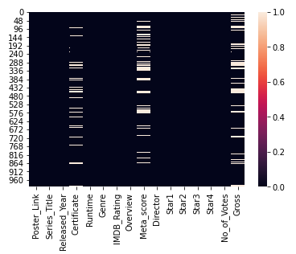
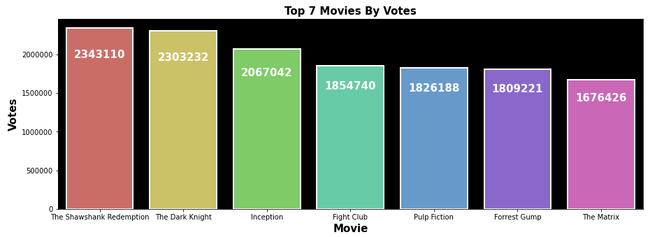
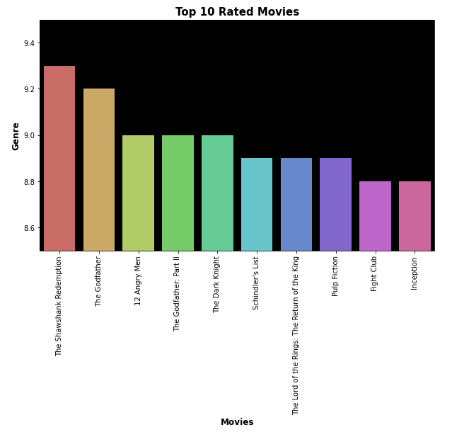

IMDB Data Analysis Project
Exploring a Movie Dataset from IMDB
In this project, I have performed EDA to explore an IMDB dataset of movies.
The aim of this project was to showcase my abilities with pandas and matplotlib,
as well as show best practices in EDA.
Whole Project
Just Code
Visualising null values:

Getting the top 7 movies by number of votes:

Getting the top grossing movies:

Getting the top 7 directors by movie votes

Number of movies by certificate:

Top Genres of movies

Top 10 rated movies:
